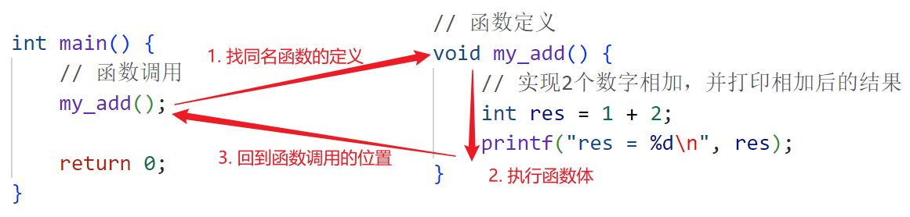
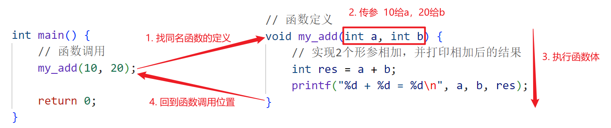
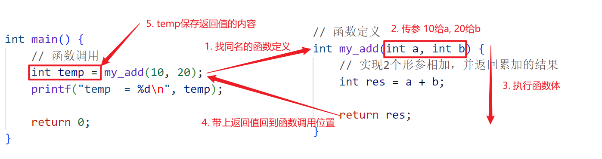

<!DOCTYPE lake>
<h1 data-lake-id="XbqhW" id="XbqhW"><span data-lake-id="u70b2e8fc" id="u70b2e8fc">无参无返回值</span></h1><ul list="u1294c131"><li data-lake-id="u44b69df0" fid="u18d9f729" id="u44b69df0"><span data-lake-id="u69399b45" id="u69399b45">语法格式如下：</span></li></ul><span class="yuque-card-unsupported">[codeblock]</span><ul data-lake-indent="1" list="u26363b04"><li data-lake-id="ua7031ce9" fid="u875ff53f" id="ua7031ce9"><span data-lake-id="ud1120c48" id="ud1120c48">函数名是标识符的一种，需要遵循规则</span></li><li data-lake-id="udb72e9af" fid="u875ff53f" id="udb72e9af"><span data-lake-id="u2454f65b" id="u2454f65b">函数只需要定义一次，反复调用</span></li><li data-lake-id="ub9dc283c" fid="u875ff53f" id="ub9dc283c"><span data-lake-id="u76a9bd89" id="u76a9bd89">只定义函数, 不调用函数, 函数永远不会被执行</span></li></ul><ul list="u26363b04"><li data-lake-id="u5ed82731" fid="u875ff53f" id="u5ed82731"><span data-lake-id="u9bce4c11" id="u9bce4c11">案例需求：</span></li></ul><ul data-lake-indent="1" list="u26363b04"><li data-lake-id="ub4401d93" fid="u875ff53f" id="ub4401d93"><span data-lake-id="u32bf6cb5" id="u32bf6cb5">编写一个函数，里面实现2个数字相加，并打印相加后的结果</span></li></ul><ul list="u26363b04" start="2"><li data-lake-id="uaa182241" fid="u875ff53f" id="uaa182241"><span data-lake-id="u1ec1d0b9" id="u1ec1d0b9">示例代码：</span></li></ul><span class="yuque-card-unsupported">[codeblock]</span><ul list="u1cf24b5d"><li data-lake-id="u5e50d225" fid="u5eba453f" id="u5e50d225"><span data-lake-id="ub2963851" id="ub2963851">执行流程</span></li></ul><p data-lake-id="ua11b486e" id="ua11b486e" style="padding-left: 2em"></p><p data-lake-id="ud4721a87" id="ud4721a87"><br/></p><h1 data-lake-id="hjzCw" id="hjzCw"><span data-lake-id="uddb4be41" id="uddb4be41">有参无返回值</span></h1><ul list="u67c97e08"><li data-lake-id="u65fdc695" fid="uad78f11f" id="u65fdc695"><span data-lake-id="u19f12349" id="u19f12349">函数参数的作用：增加函数的灵活性</span></li></ul><ul data-lake-indent="1" list="u67c97e08"><li data-lake-id="u577ddbbe" fid="uad78f11f" id="u577ddbbe"><span data-lake-id="u92e4cd2c" id="u92e4cd2c">可以根据需求在调用函数时, 通过参数传入不同的数据</span></li></ul><ul list="u67c97e08" start="2"><li data-lake-id="u02dfdaaf" fid="uad78f11f" id="u02dfdaaf"><span data-lake-id="u49f73b63" id="u49f73b63">语法格式如下：</span></li></ul><span class="yuque-card-unsupported">[codeblock]</span><ul data-lake-indent="1" list="u496d7d58"><li data-lake-id="ua97b94f5" fid="udf7c32fd" id="ua97b94f5"><span data-lake-id="ude02a367" id="ude02a367">实参和形参的关系：从左往右，一一对应</span></li></ul><ul list="u496d7d58"><li data-lake-id="u30901ad2" fid="udf7c32fd" id="u30901ad2"><span data-lake-id="ud0f46b6c" id="ud0f46b6c">案例需求：</span></li></ul><ul data-lake-indent="1" list="u496d7d58"><li data-lake-id="u4ce08228" fid="u875ff53f" id="u4ce08228"><span data-lake-id="u06f70149" id="u06f70149">编写一个函数，实现2个数相加，2个数通过参数传递</span></li></ul><ul list="u496d7d58" start="2"><li data-lake-id="u14018aaf" fid="udf7c32fd" id="u14018aaf"><span data-lake-id="u0db2818b" id="u0db2818b">示例代码：</span></li></ul><span class="yuque-card-unsupported">[codeblock]</span><ul list="ua2922a04"><li data-lake-id="u6766393d" fid="u6c80ec25" id="u6766393d"><span data-lake-id="ue6e4a723" id="ue6e4a723">执行流程</span></li></ul><p data-lake-id="u92287a6b" id="u92287a6b" style="text-align: left; padding-left: 2em"></p><p data-lake-id="u1ba1e8f7" id="u1ba1e8f7" style="text-align: left; padding-left: 2em"><br/></p><h1 data-lake-id="QRL7p" id="QRL7p"><span data-lake-id="u52475190" id="u52475190">有参有返回值</span></h1><h2 data-lake-id="tkgZn" id="tkgZn"><span data-lake-id="uf5e958fe" id="uf5e958fe">返回值基本语法</span></h2><ul list="u9fb9c49a"><li data-lake-id="ud0cb4067" fid="uad78f11f" id="ud0cb4067"><span data-lake-id="u33ac49bd" id="u33ac49bd">函数返回值的作用：函数外部想使用函数内部的数据</span></li><li data-lake-id="u79ee8962" fid="uad78f11f" id="u79ee8962"><span data-lake-id="u445044b1" id="u445044b1">语法格式如下：</span></li></ul><span class="yuque-card-unsupported">[codeblock]</span><ul data-lake-indent="1" list="u837af32a"><li data-lake-id="ued1e3835" fid="u09b1d42c" id="ued1e3835"><span data-lake-id="u2db521f7" id="u2db521f7">return是函数的专属关键字，只能用在函数内使用</span></li></ul><ul list="u837af32a"><li data-lake-id="u49b21ecc" fid="u09b1d42c" id="u49b21ecc"><span data-lake-id="uaf80662d" id="uaf80662d">案例需求：</span></li></ul><ul data-lake-indent="1" list="u837af32a"><li data-lake-id="u18df8842" fid="u875ff53f" id="u18df8842"><span data-lake-id="u6ae63cd7" id="u6ae63cd7">编写一个函数，实现2个数相加，2个数通过参数传递，返回累加结果给外部使用</span></li></ul><ul list="u837af32a" start="2"><li data-lake-id="u4580ab50" fid="u09b1d42c" id="u4580ab50"><span data-lake-id="uc3b419b4" id="uc3b419b4">示例代码：</span></li></ul><span class="yuque-card-unsupported">[codeblock]</span><ul list="u6d19f995"><li data-lake-id="u0ef8fad4" fid="uf14e9d52" id="u0ef8fad4"><span data-lake-id="u4cea3ad5" id="u4cea3ad5">执行流程</span></li></ul><p data-lake-id="u60d7f037" id="u60d7f037" style="padding-left: 2em"></p><h2 data-lake-id="LSDqz" id="LSDqz"><span data-lake-id="u6626663e" id="u6626663e">返回值注意点</span></h2><ul list="u84fed485"><li data-lake-id="u525ad5e5" fid="u66242e5b" id="u525ad5e5"><span data-lake-id="u93e9eeaf" id="u93e9eeaf">return的作用是结束函数</span></li></ul><ul data-lake-indent="1" list="u84fed485"><li data-lake-id="u4bdc0d93" fid="u66242e5b" id="u4bdc0d93"><span data-lake-id="ued5d03b9" id="ued5d03b9">函数内，return后面的代码不会执行</span></li></ul><ul list="u84fed485" start="2"><li data-lake-id="u476facd1" fid="u66242e5b" id="u476facd1"><span data-lake-id="u409e624b" id="u409e624b">示例代码</span></li></ul><span class="yuque-card-unsupported">[codeblock]</span><h1 data-lake-id="r7dZN" id="r7dZN"><span class="lake-fontsize-12" data-lake-id="u23030a2b" id="u23030a2b">函数的声明</span></h1><ul list="u8fb34cef"><li data-lake-id="u263cf0fc" fid="u217e26d2" id="u263cf0fc"><span data-lake-id="u4e08075f" id="u4e08075f">如果函数定义代码没有放在函数调用的前面，这时候需要先做函数的声明</span></li><li data-lake-id="ucda4201a" fid="u217e26d2" id="ucda4201a"><span data-lake-id="ud6f24a0f" id="ud6f24a0f">所谓函数声明，相当于告诉编译器，函数是有定义的，在别的地方定义，以便使编译能正常进行</span></li><li data-lake-id="u2f340c39" fid="u217e26d2" id="u2f340c39"><span data-lake-id="u4cd45dd1" id="u4cd45dd1">注意：一个函数只能被</span><strong><span data-lake-id="ub7e424e5" id="ub7e424e5">定义</span></strong><span data-lake-id="u82a288c4" id="u82a288c4">一次，但可以</span><strong><span data-lake-id="u8542abef" id="u8542abef">声明</span></strong><span data-lake-id="u4ae96680" id="u4ae96680">多次</span></li></ul><span class="yuque-card-unsupported">[codeblock]</span><p data-lake-id="u8e5926a5" id="u8e5926a5"><br/></p><h1 data-lake-id="VwuVS" id="VwuVS"><span data-lake-id="u7ce6154f" id="u7ce6154f">函数案例</span></h1><ul list="u8cd4d172"><li data-lake-id="u1f68728b" fid="ue34f05eb" id="u1f68728b"><span data-lake-id="u33274f6f" id="u33274f6f">需求：自定义一个函数</span><code data-lake-id="uc366d265" id="uc366d265"><span data-lake-id="u48df7ba6" id="u48df7ba6">my_max</span></code><span data-lake-id="u1e0c5023" id="u1e0c5023">，返回2个整数的最大值</span></li></ul><span class="yuque-card-unsupported">[codeblock]</span>